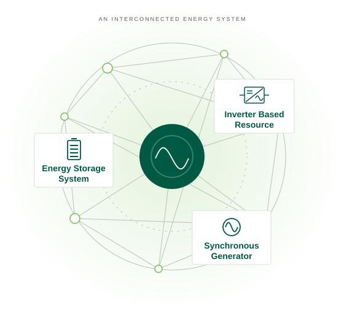

Energy research · Binghamton University
Power systems
& energy storage.
Research interests:
- Nonlinear Dynamics
- Power Systems Operation
- Energy Storage Integration

Storage · Control · Interconnection01
Three connected directions
Education & workforce training
The next generation
of power engineers.
NYPA-supported coursework, simulation labs, and internship opportunities connect learning with industry practice. Our IEEE seminar series brings NYPA, NYISO, NYSEG, and AVANGRID expertise into the classroom.

Learn by changing the system
How quickly must
a fault be cleared?
Change inertia, loading, and clearing time. See the rotor-angle response and find the stability boundary yourself.
Open interactive education02
See the work
Research in motion
Watch the lab’s grid-stability animation and a hybrid-plant electricity-price comparison.
Watch research videos03
Meet the group
People behind the research
Explore the faculty, students, alumni, and life around the lab.
Meet the group